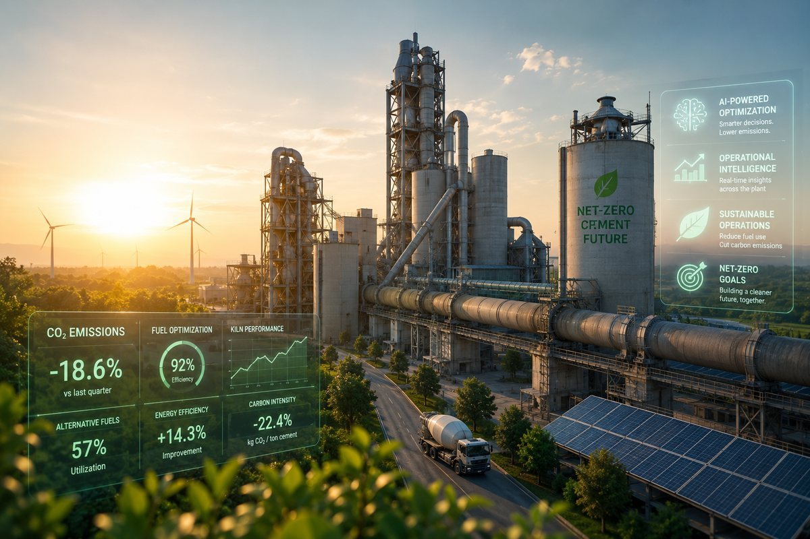

Decarbonizing the Cement Industry: How AI and Operational Intelligence Are Accelerating Net-Zero Cement Manufacturing
Why cement manufacturers must move beyond plant optimization and adopt operational intelligence to achieve net-zero goals, improve efficiency, and modernize industrial operations.
The global push toward decarbonizing the cement industry is fundamentally reshaping how cement producers operate. As one of the world's most carbon-intensive industries, cement manufacturing faces growing pressure to reduce emissions, improve energy efficiency, and accelerate the transition toward net-zero cement manufacturing.
The challenge is immense. Unlike many industries, cement emissions are not solely the result of fuel consumption. Nearly two-thirds of emissions originate from the chemical process of producing clinker itself. At the same time, producers must balance growing sustainability expectations with rising energy costs, increasing regulatory pressures, operational complexity, and the need to remain globally competitive.
Achieving these goals will require far more than isolated technology investments or sustainability commitments. It will require AI in cement manufacturing, connected industrial operations, and a fundamentally new approach to operational decision-making.
Why Cement Decarbonization Is an Operational Intelligence Challenge
The future of sustainable cement manufacturing depends on an organization's ability to orchestrate thousands of operational decisions every day. Fuel selection, kiln performance, raw material quality, maintenance activities, logistics, and emissions management are deeply interconnected.
Yet many producers continue to manage these activities through fragmented systems and disconnected teams, creating a significant industrial intelligence gap.
A decision to increase alternative fuel substitution can lower fossil fuel emissions but may also affect kiln stability, clinker chemistry, product quality, and production costs. A decision to reduce clinker factor can lower embodied carbon but may introduce challenges in raw material availability, performance specifications, and customer requirements. An equipment outage can have implications far beyond maintenance, impacting energy consumption, production schedules, customer deliveries, and emissions intensity.
These are not isolated operational issues. They are enterprise orchestration challenges that require better visibility, faster decision-making, and cross-functional alignment.
The companies that successfully navigate cement decarbonization will be those that can connect operational data, financial performance, sustainability targets, and human expertise into a single, orchestrated decision-making environment.
Why Legacy SCADA and DCS Systems Are No Longer Enough
Most cement producers have invested heavily in digital infrastructure over the past two decades. Plants operate using sophisticated SCADA systems, Distributed Control Systems (DCS), historians, laboratory information systems, maintenance platforms, ERP systems, and environmental reporting tools.
However, many organizations continue to rely on legacy SCADA systems and DCS environments that were designed primarily for process control rather than enterprise decision-making. These systems are excellent at controlling equipment and monitoring process conditions. They were never designed to answer questions such as:
- How will increasing alternative fuel substitution impact production costs and carbon intensity?
- What is the relationship between kiln stability and financial performance?
- Which operational decisions are driving emissions variability?
- What production scenarios best balance cost, quality, and sustainability objectives?
Even organizations that have invested in modern industrial data platforms and enterprise data lakes often discover that centralizing data does not automatically improve decisions. A data lake can store information. It cannot tell leaders what changed, why it matters, who needs to act, or what the operational consequences may be.
The challenge facing cement producers today is not a lack of data. It is a lack of operational intelligence.
AI for Cement Plant Optimization and Decarbonization
Today's leading producers are deploying AI for cement plant optimization to improve energy efficiency, stabilize kiln operations, reduce clinker variability, and optimize alternative fuel usage. AI is proving valuable across several key areas.
Pyro-Process and Kiln Optimization
The rotary kiln remains the largest consumer of thermal energy and the single most important source of operational emissions. AI models can continuously analyze:
- Temperature profiles
- Oxygen levels
- Fuel feed rates
- Draft conditions
- Raw meal chemistry
- Alternative fuel characteristics
- Clinker quality indicators
By identifying patterns and stabilizing operating conditions, producers can significantly improve process consistency, lower fuel consumption, and reduce emissions.
Alternative Fuel Optimization
Increasing the use of biomass and waste-derived fuels is a major component of cement carbon reduction strategies. However, alternative fuels often introduce variability in calorific value, moisture, and combustion behavior. AI can continuously evaluate these variables and recommend optimal blending strategies that improve fuel substitution while maintaining kiln stability.
Quality Control and Clinker Chemistry
AI-driven virtual sensors can predict product characteristics before traditional laboratory analysis becomes available. This allows operators to proactively adjust the raw mix, improve product consistency, reduce waste, and lower energy consumption.
Supply Chain and Logistics Optimization
Decarbonization extends beyond the plant fence. AI can optimize:
- Raw material supply
- Transportation scheduling
- Fleet utilization
- Delivery routing
- Inventory management
These improvements reduce costs and help lower Scope 3 emissions associated with transportation and logistics.
Predictive Maintenance and Industrial AI in Cement Manufacturing
Predictive maintenance for cement plants has become one of the most compelling applications of industrial AI. Cement facilities rely on heavy, continuously operating equipment:
- Kilns
- Ball mills
- Vertical roller mills
- Crushers
- Conveyors
- Fans
- Gearboxes
- Refractory systems
Failures can be extraordinarily costly. By analyzing vibration, temperature, pressure, and operating data, machine learning models can identify developing failures before they result in unplanned downtime. The result is:
- Improved equipment reliability
- Reduced maintenance costs
- Increased plant availability
- Lower energy intensity
- Reduced operational risk
These capabilities are increasingly becoming essential for producers seeking both operational excellence and decarbonization.
How TwoSuns.ai Enables Operational Intelligence for Cement Manufacturers
The next generation of smart cement plants will require more than individual AI applications. They will require an intelligence layer capable of connecting operational systems, market data, financial information, and human expertise. This is where TwoSuns.ai fits.
TwoSuns.ai is an enterprise intelligence platform for cement companies that unifies operational, financial, market, and sustainability data into a continuous intelligence environment. Rather than replacing existing infrastructure, TwoSuns.ai works alongside:
- SCADA systems
- DCS platforms
- ERP systems
- Laboratory systems
- Maintenance applications
- Market intelligence platforms
- Enterprise data lakes
Whether a producer operates with legacy SCADA systems or has invested in a modern industrial data platform, the challenge remains the same: how do you transform data into orchestrated action?
TwoSuns.ai acts as the industrial orchestration layer, helping organizations connect plant-floor data with financial performance, emissions targets, operational risks, and executive priorities. For cement producers, this creates the ability to:
- Monitor fuel stability and energy intensity
- Improve kiln and mill performance
- Analyze cost-per-ton and emissions trends
- Detect abnormal operating conditions
- Understand the impact of alternative fuels
- Benchmark plant performance
- Improve cross-functional orchestration
- Create executive decision packs
- Capture institutional knowledge and decision history
The result is not simply better reporting. It is faster, more explainable, and more consistent decision-making.
Human-in-the-Loop AI for Cement Manufacturing
The future of AI-powered cement decarbonization is not fully autonomous. Cement manufacturing remains highly contextual. Experienced operators understand:
- Plant behavior
- Material variability
- Fuel characteristics
- Equipment history
- Seasonal conditions
- Operational constraints
No model can fully replicate this knowledge. This is why human-in-the-loop AI is becoming increasingly important across industrial operations.
AI should enhance human expertise, not replace it.
By combining machine intelligence with operational experience, organizations can make better decisions, preserve institutional knowledge, and continuously improve performance. This is particularly important as experienced operators retire and the industry faces growing workforce challenges. Capturing knowledge and embedding it into operational workflows will become a significant competitive advantage.
The Future of Cement Decarbonization Is Orchestrated Execution
The next generation of smart cement plants will not be defined solely by automation, digitalization, or the volume of data they collect. They will be defined by their ability to transform information into orchestrated execution across operations, maintenance, energy management, procurement, and executive decision-making.
As the industry accelerates toward net-zero cement manufacturing, the challenge extends far beyond implementing new technologies or deploying individual AI applications. Decarbonization is fundamentally an operating model challenge. It requires organizations to continuously balance emissions reduction, production targets, fuel economics, equipment performance, regulatory requirements, and financial objectives, all while responding to changing market conditions and operational constraints.
This level of complexity cannot be managed through disconnected systems or isolated AI pilots. The future of sustainable cement manufacturing will depend on connected intelligence that brings together plant data, market signals, human expertise, and multiple AI capabilities into a single, explainable decision environment. Organizations that can align daily operational decisions with long-term sustainability commitments will be better positioned to reduce emissions, improve resilience, and create a lasting competitive advantage.
This is where operational intelligence becomes a strategic capability. By connecting fragmented information and transforming it into actionable recommendations and orchestrated workflows, TwoSuns.ai enables cement producers to move beyond visibility and reporting toward continuous optimization and intelligent execution. In an industry where every operational decision can affect both profitability and carbon performance, the leaders of the next decade will be those that can turn complexity into orchestrated action.
The future of cement manufacturing will not belong to the companies with the most data, it will belong to the companies that can orchestrate intelligence, execute faster, and decarbonize with confidence.